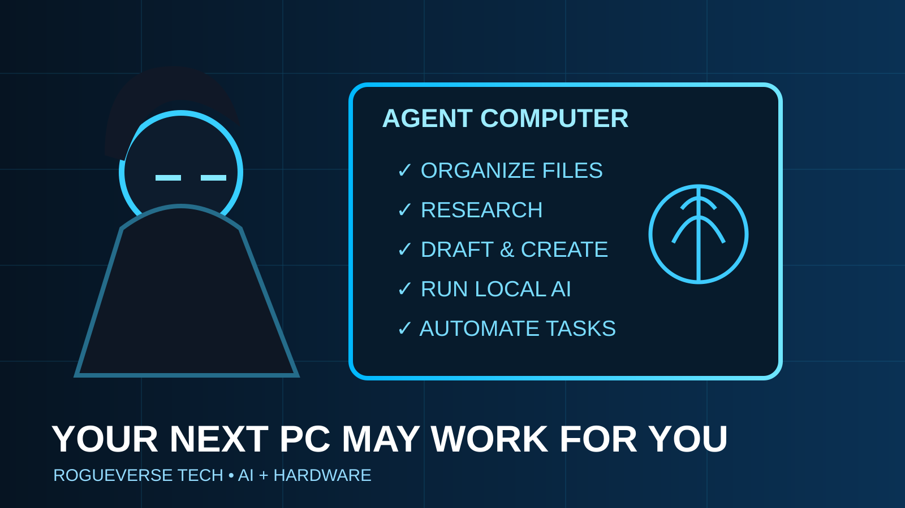

OUR CULTURE / TECH • AUGUST 19, 2026
Your Next PC May Be an AI Worker: The Agent Computer Arrives
The personal computer was built for you to operate. The next class of machine may spend its day operating software for you.

The first wave of AI PCs was easy to summarize: manufacturers added dedicated neural-processing hardware and promised faster AI features. The second wave is more disruptive.
Instead of asking how quickly a computer can answer an AI prompt, the industry is starting to ask what happens when the computer keeps an AI agent running all day.
AMD has given that idea a blunt name: the “Agent Computer.” Qualcomm is demonstrating agentic applications running natively on Snapdragon X Series PCs. The common thread is a machine designed not merely to execute commands one at a time, but to maintain persistent AI tools that can interpret goals, use software and move work forward with less direct supervision.
From tool to delegate
A traditional PC waits. You open an application, click a menu, type a command, save the result and move to the next step. Agentic systems aim to collapse some of that sequence. You provide intent and the agent handles portions of the workflow.
AMD describes an Agent Computer as a dedicated local system that can run agents continuously, potentially without a monitor attached. Its pitch is simple: a normal personal computer runs your apps; an agent computer runs agents that use those apps on your behalf.
That distinction sounds like marketing until you imagine the practical consequences. A creator could assign an agent to organize project files, generate rough transcripts, watch render folders, prepare research packets, compare revisions and flag missing assets. A small business could delegate repetitive monitoring, reporting and document preparation. A developer could keep coding agents operating against local repositories without routing every task through a cloud service.
Local AI changes the economics
Cloud AI is convenient because the expensive hardware lives somewhere else. But continuous use changes the math. Subscriptions, API calls, generation credits and token-based billing can turn a helpful tool into a recurring production cost.
AMD is explicitly selling local agent computing as an alternative: buy capable hardware once and run substantial workloads on-device. Its Ryzen AI Max+ platforms combine CPU, GPU, NPU and large pools of unified memory, with AMD advertising configurations capable of supporting very large local models.
That does not make cloud AI obsolete. Frontier-scale models still require enormous infrastructure, and cloud services remain easier for many people to deploy. But a hybrid model is emerging: routine or private tasks locally, heavier jobs in the cloud.
Qualcomm is pushing the always-on version
Qualcomm’s August 2026 demonstrations show another side of the shift. Snapdragon X Series PCs are being positioned as efficient local compute nodes for agentic applications, with partners including AnythingLLM, Pokee AI, LLMWare, Deepgram and Memories.ai.
The interesting part is not any single application. It is the workload pattern. Agents may need to monitor context, retain memory, listen for events and perform bursts of inference throughout the day. That rewards systems built for sustained efficiency rather than only peak benchmark performance.
Battery life, thermals, memory bandwidth and NPU capability therefore become part of the AI conversation in a way they were not during the chatbot boom.
The privacy upside is enormous
Local inference has one obvious advantage: sensitive data does not always need to leave the machine.
That matters for personal journals, financial documents, unreleased creative work, source code, family photos, client material and workplace communications. An AI agent that can understand those files without uploading every piece of context to a remote server creates a very different privacy model.
Qualcomm specifically highlights applications designed to process contextual information locally. AMD likewise presents local agent systems as a way to keep more workloads under the user’s control.
But local does not automatically mean safe. An always-on agent with permission to read files, send messages and operate applications can create a new security problem inside the computer itself. The more capable the agent becomes, the more important permissions, audit trails, sandboxing and human approval become.
The new bottleneck may be memory, not just TOPS
AI PC marketing has trained buyers to look at TOPS, a measure of accelerator performance. Agent computers make memory capacity and bandwidth just as important.
Large models need room. Multiple agents need room. Long context windows, image models, speech systems and local databases all compete for memory. That is one reason unified-memory systems with unusually large capacities are becoming attractive for local AI workloads.
For creators, this could reshape PC upgrade advice. A machine selected for gaming might prioritize GPU performance. A machine selected for persistent local AI may need a more balanced combination of GPU compute, NPU efficiency, CPU capability and a much larger memory pool.
What this means for ordinary people
The phrase “AI agent” can sound abstract, but the consumer version will probably arrive through mundane conveniences first: sorting files, summarizing meetings, preparing shopping comparisons, finding forgotten documents, cleaning inboxes, organizing photos and completing multi-step tasks across apps.
The deeper change is behavioral. We have spent decades learning how to operate computers. Agentic computing asks computers to learn enough about our intent to operate themselves.
That can save time, but it also creates dependence. If your agent manages the workflows you no longer remember how to perform manually, switching platforms becomes harder. If the agent’s memory is locked to one vendor, portability becomes an ownership issue. If its decisions are invisible, convenience can turn into loss of control.
The creator workstation may be the first killer use case
Creators are unusually well positioned to benefit because their work is a pile of connected but repetitive tasks: research, asset organization, transcription, resizing, metadata, drafts, backups, posting schedules and version management.
An agent computer does not need to replace the creative act to be transformative. It only needs to remove enough production friction that one person can manage a workflow that previously required a small team.
That is why this category matters beyond enthusiasts. The PC may be evolving from a tool you sit in front of into a piece of infrastructure that quietly works beside you.
The RogueVerse Tech verdict
The AI PC era was introduced as a hardware refresh. The agent-computer era is potentially a workflow refresh.
The winning machine will not simply be the one with the biggest AI benchmark. It will be the one that can run useful agents reliably, privately and cheaply without turning every task into another subscription.
The personal computer gave individuals professional tools. The agent computer could give individuals something closer to a tiny digital staff.
That future sounds powerful. It also means the next PC buying question may not be “What can this computer run?”
It may be “What can this computer keep doing after I walk away?”